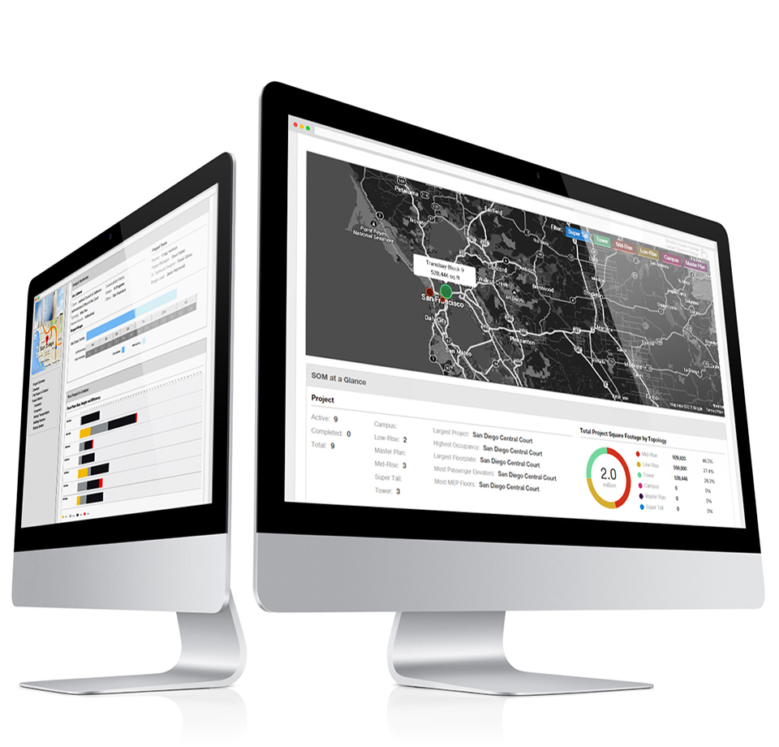
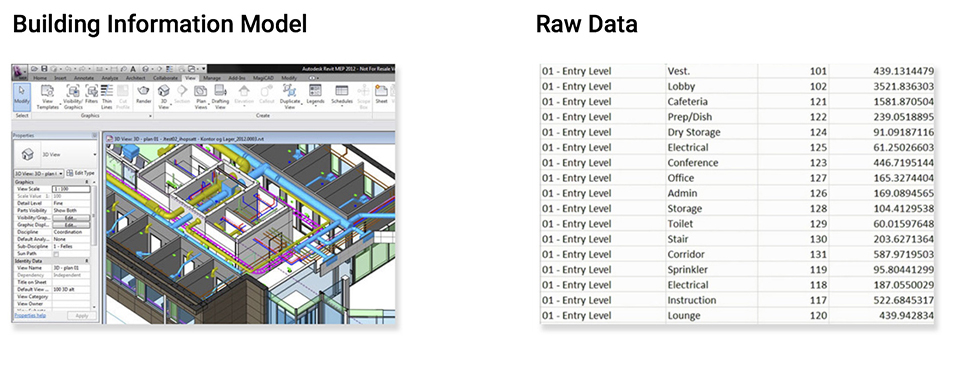
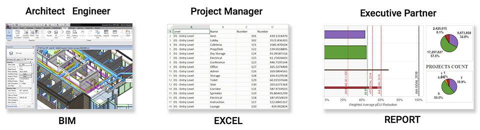
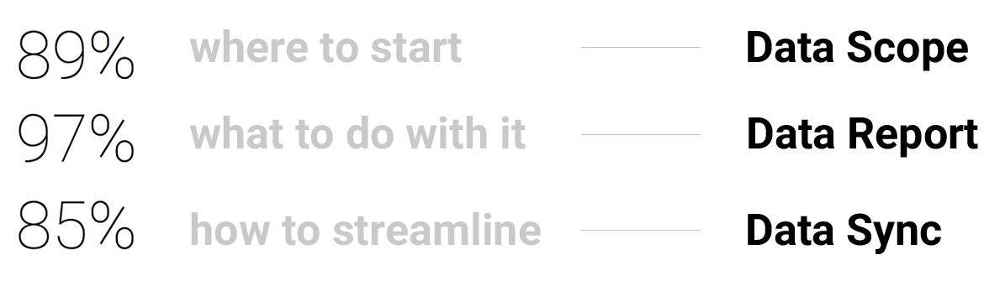
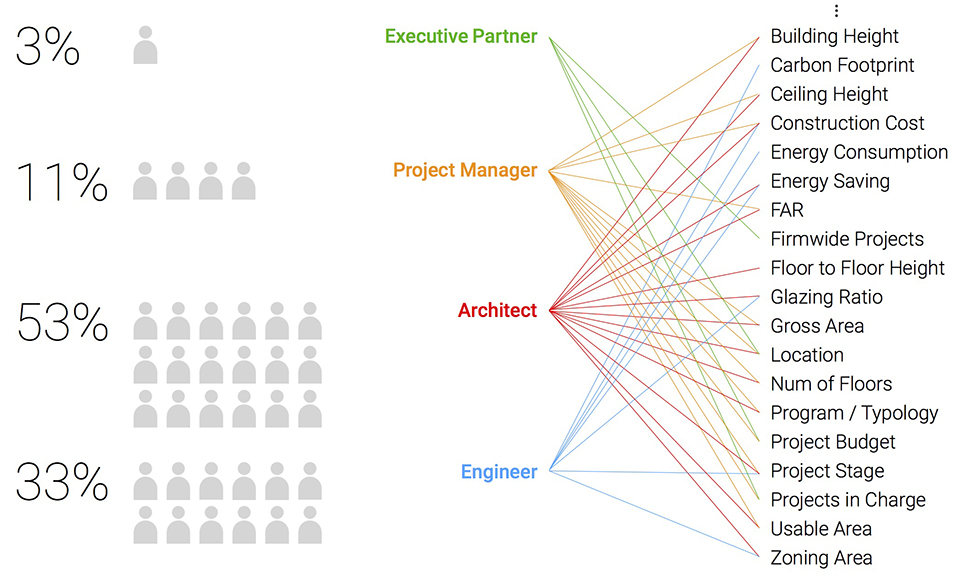
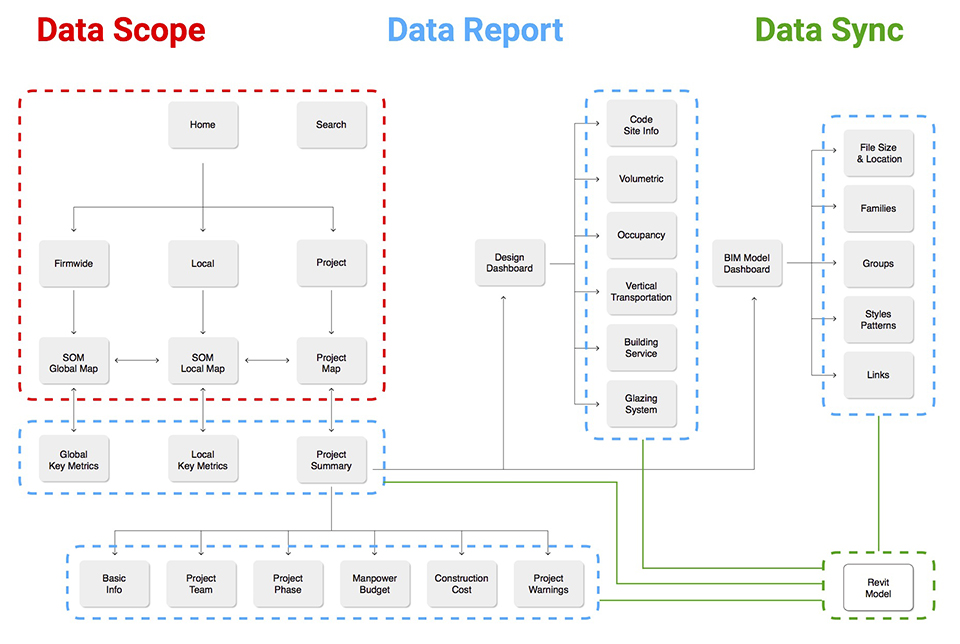
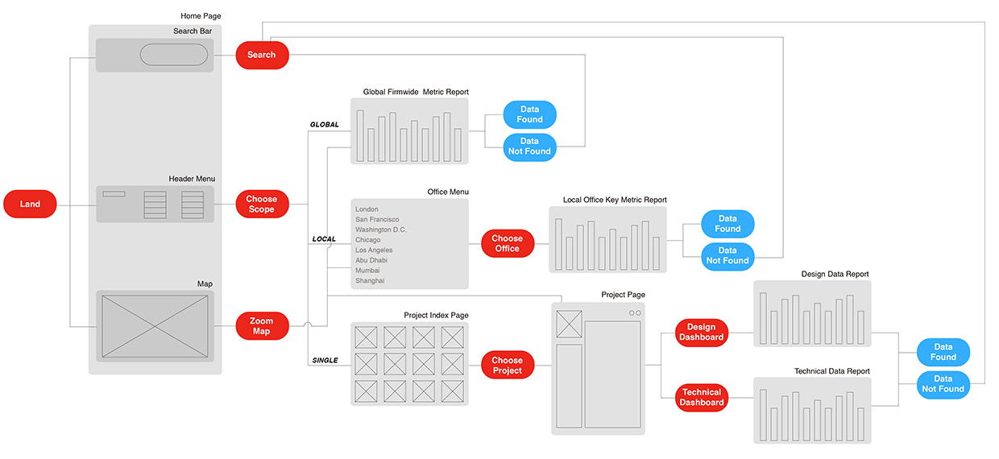
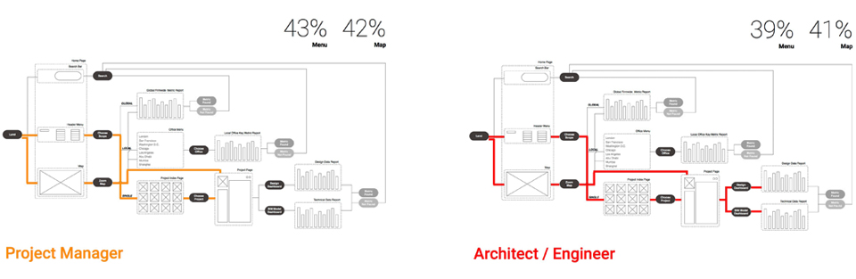
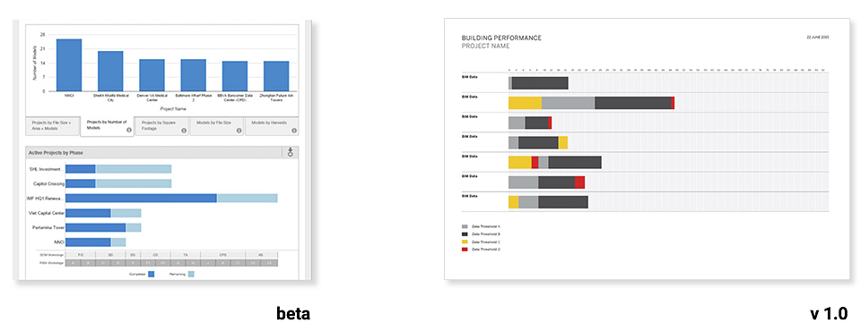

Overview
This is a new web-based data tool designed for SOM LLP. It's developed as internal in the beginning and now pushed for the whole AEC industry.
I worked as the sole designer on this project. My jobs covered UI/UX design, data visualization and fast prototyping.
I collaborated with executive director, PM, data engineers from zero to beta to v1.0.0.
All wireframes, mockups, real-time data maps and charts showed here were designed and created by me.
73% of SOM's BIM-based projects have migrated from traditional CMS software to this new data dashboard and all project managers use it on daily base.

Context
SOM LLP. is one of the largest AEC (Architecture, Engineering and Construction) design and consulting companies. By 2014, all of SOM's projects had been digitized and 73% of them were designed and engineered in BIM (Building Information Model) software, which generates large amounts of valuable data for designing and managing large scale projects.

User Problem
BIM is a highly professional and user-unfriendly software and it's very difficult for people to make use of the data generated by building information models. The old work flow is a manual process of extracting, formatting, analyzing, visualizing and reporting big data sets, which takes really long time and becomes extremely heavy and inefficient. Though working on a same project, different people use different tools and speak different software "languages" with data.

Design Goal
Based on the user research of data-to-do lists, top three questions define the three most important product functions and design goals. The data dashboard is designed to help people prioritize data types, generate data analytics reports, and syncronize all data in real-time. The design needs to address different user's data scopes (global, local, single project) and data reading behaviors.

Global and local.
Big picture by data aggregation.
The dashboard provides three levels to dive into project BIM data search and management: "Firmwide" collects the global data from projects all around the world; "Offices" offers user choices to show local office's data; "Projects" is the access to the data of one specific project. "Firmwide" and "Offices" sections are layed out on a customized real-time map hooked with data.
2. Offices: one local office
Single Project.
Collaborating and Managing through data.
Project page provides full details of spatial and technical data analytics for one selected project. It tracks a single project's performance metrics such as Gross Area, FAR, Glazing energy consumption etc. at every stage and the data is automatically updated and visualized when any team member updates her/his BIM model.
1. Project brief and summary
2. Spatial metrics part 1
3. Spatial metrics part 2
4. Technical metrics part 1
5. Technical metrics part 2
Data Match
Different people care about different types and scopes of data. We had a research and workshop session to match all players with right data, which provides the main hierarchy for user flow and navigation.

Site Maps
The site maps was established around the three main functions of the data dashboard.

Interaction Flow
Three ways are designed for user to navigate and find the right data. The first one is through traditional menus to go to different pages and check different types of data, the second is to use a real-time data-based map to zoom in and out between different scopes of data - from firmwide to local office to single project. In the end, a search function is always in presence to help user quickly pinpoint what she/he is looking for.

A/B Testing
A/B testing was conducted after initial release to compare different types of users' navigating behaviors. The result suggested Menu and Map navigation almost played equal role in searching and finding specific data, which led to a both-and design decision at that stage.

The next design guideline.
Turn number into signal.
A new design guideline for laying out metrics and numbers is implemented in v1.0. It aims at providing a new visual system and color patterns for measuring Building Spatial Metrics and Building Technical Metrics based on different project stages. The design logic behind it is using color pattern to give immediate signal of data threshold-breaking and time frame-dragging, which enables users to quickly locate the problem and respond to it.

2. Technical metrics chart